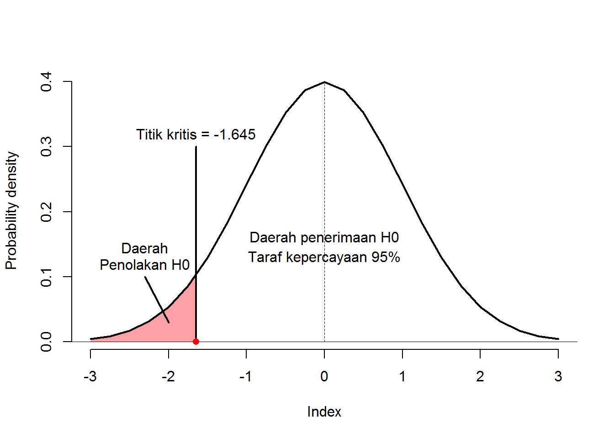

Bagian 3 Uji 2 Sampel Berpasangan
3.1 Tujuan
- Mahasiswa mampu memahami konsep dasar pengujian 2 sampel independen
- Mahasiswa mampu melakukan pengujian 2 sampel independen secara manual
- Mahasiswa mampu melakukan pengujian 2 sampel independen menggunakan aplikasi pengolah data SPSS dan R
3.2 Dasar Teori
sebelumnya telah kita bahas tentang pengujian pada data yang saling bebas. Namun terkadang peneliti ini mengetahui apakah terdapat perbedaan hasil pada pada data setelah mendapatkan perlakuan tertentu. Peneliti akan mencatat/mengukur kondisi objek sebelum dan setelah mendapatkan perlakukan. Sehingga kini peneliti memiliki 2 kelompok data yaitu data sebelum dan setelah perlakuan. Data jenis ini lebih sering disebut dengan sampel berpasangan (paired/matched samples). Terkadang pada rujukan lain kita akan menemukan istilah yang berbeda, seperti dependent samples (Bluman 2018).
Berikut ini adalah contoh kasus 2 sampel berpasangan:
- Seorang guru ingin mengatahui apakah terdapat peningkatan nilai matematika siswa kelas X apabila mendapatkan pembelajaran dengan menggunakan media video.
- Seorang peneliti ingin menguji apakah terdapat penurunan tekanan darah pada wanita lanjut usia (lansia) apabila tidak mengkonsumsi makanan yang mengandung penyedap rasa dalam waktu 2 minggu.
- Kelapa Program Studi Ilmu Gizi FKM XX melakukan penelitian terhadap daya terima konsumen pada cilok yang telah mendapatkan tembahan tepung teri dalam proses pembuatannya. Pertama-tama kaprodi memberikan cilok yang biasa dijual kepada panelis, lalu setelah itu panelis membersikan mulutnya dan mencoba cilok yang telah dimodifikasi. Selanjutnya akan dilakukan pengujuan terhadap hasil pendataan tersebut.
3.2.1 Hipotesis Pengujian
Uji t 2 sampel berpasangan memiliki cara yang berbeda dalam melakukan pengujian. Pengujian ini akan membandingkan hasil rata-rata selisih (disimbolkan dengan \(\bar{D}\)) dari data sebelum dan setelah dengan nilai t tabel. Terdapat 3 hipotesis yang dapat digunakan, yaitu:
Hipotesis Satu Arah Kanan
Hipotesis ini digunakan untuk menguji apakah besar rata-rata selisih dari sampel yang berpasangan lebih dari 0.
Hipotesis ditulis sebagai berikut:
\(H_0 : \mu_D = 0\)
\(H_1 : \mu_D > 0\)
Dengan \(\mu_D\) adalah simbol untuk ekspetasi rata-rata dari selisih sampel berpasangan. Daerah penolakan dan penerimaan \(H_0\) pada \(\alpha = 5\%\) dan \(df = 10000\) dapat dilihat pada gambar berikut:

Penolakan \(H_0\) dilakukan apabila nilai \(t_{hitung}\) berada pada daerah penolakan H0 (\(t_{hitung}\) > nilai kritis \(1.645\)).
Hipotesis Satu Arah Kiri
Hipotesis ini digunakan untuk menguji apakah besar rata-rata selisih dari sampel yang berpasangan kurang dari 0.
Hipotesis ditulis sebagai berikut:
\(H_0 : \mu_D = 0\)
\(H_1 : \mu_D < 0\)
Daerah penolakan dan penerimaan \(H_0\) pada \(\alpha = 5\%\) dan \(df = 10000\) dapat dilihat pada gambar berikut:

Penolakan \(H_0\) dilakukan apabila nilai \(t_{hitung}\) berada pada daerah penolakan H0 (\(t_{hitung}\) < nilai kritis \(-1.645\)).
Hipotesis Dua Arah Kanan
Hipotesis ini digunakan untuk menguji apakah terdapat perbedaan rata-rata dari kelompok data yang berpasangan.
Hipotesis ditulis sebagai berikut:
\(H_0 : \mu_D = 0\)
\(H_1 : \mu_D \neq 0\)
Daerah penolakan dan penerimaan \(H_0\) pada \(\alpha = 5\%\) dan \(df = 10000\) dapat dilihat pada gambar berikut:

Penolakan \(H_0\) dilakukan apabila nilai \(t_{hitung}\) berada pada daerah penolakan H0 (\(t_{hitung}\) < nilai kritis \(-1.960\) bila \(t_{hitung}\) negatif atau \(t_{hitung}\) > nilai kritis \(1.960\) bila \(t_{hitung}\) positif).
3.2.2 Uji t 2 Sampel Independen
Layaknya pengujian parametrik lainnya, uji t 2 sampel berpasangan juga memiliki beberapa asumsi yang harus dipenuhi. Asumsi-asumsi tersebut ialah:
- Sampel diambil secara acak
- Sampel independen
- Bila ukuran sampel kurang dari 30, maka sampel harus berasal dari populasi yang berdistribusi normal
Formula untuk melakukan uji 2 sampel berpasangan adalah sebagai berikut:
\[ t=\frac{\bar{D}-\mu_D}{s_D / \sqrt{n}} \] dengan \[ \bar{D}=\frac{\sum{D}}{n} \quad\text{and}\quad s_D=\sqrt{\frac{n\sum{D^2}-(\sum{D})^2}{n(n-1)}} \] dimana:
- \(n=\) jumlah data
- derajat kebebasan sama dengan \(n-1\)
- \(\bar{D}=\) selisih data sebelum dan setelah
- \(s_D=\) standar deviasi selisih data sebelum dan setelah
3.2.2.1 Contoh
Seorang peniliti ingin menguji apakah terdapat penurunan kadar kolesterol pada pasien penderita diabetes apabila rutin mengkonsumsi habatus sauda setiap pagi selama 2 minggu. Peneliti menggunakan 10 pasien secara acak dan mengukur kadar kolesterolnya. Setelah 2 minggu kemudian peneliti melakukan pengukuran ulang. Berikut adalah data yang didapat:
| 1 | 2 | 3 | 4 | 5 | 6 | 7 | 8 | 9 | 10 | |
|---|---|---|---|---|---|---|---|---|---|---|
| sebelum | 201 | 198 | 216 | 210 | 215 | 196 | 204 | 209 | 187 | 193 |
| setelah | 159 | 173 | 183 | 159 | 160 | 162 | 179 | 197 | 181 | 162 |
Dengan menggunakan \(\alpha\) = 5%, tentukan apakah ada perbedaan penurunan kadar kolesterol setelah rutin mengkonsumsi habatus sauda setiap pagi selama 2 minggu?
Jawab
Kita memerlukan nilai \(\bar{D}\) dan \(s_D\) untuk dapat menghitung nilai \(t_hitung\). Sedangkan dalam perhitungan \(s_D\) kita memerlukan kuadrat dari jumlah semua selisih (\((\sum{D})^2\)). Semua nilai tersebut dapat kita kerjakan sekaligus dengan menggunakan 1 tabel berikut:
| 1 | 2 | 3 | 4 | 5 | 6 | 7 | 8 | 9 | 10 | |
|---|---|---|---|---|---|---|---|---|---|---|
| sebelum | 201 | 198 | 216 | 210 | 215 | 196 | 204 | 209 | 187 | 193 |
| setelah | 159 | 173 | 183 | 159 | 160 | 162 | 179 | 197 | 181 | 162 |
| D | 42 | 25 | 33 | 51 | 55 | 34 | 25 | 12 | 6 | 31 |
| D2 | 1764 | 625 | 1089 | 2601 | 3025 | 1156 | 625 | 144 | 36 | 961 |
Langkah-langkah pengerjaan
- Tentukan hipotesis pengujian:
\(H_0 : \mu_D = 0\)
\(H_1 : \mu_D \neq 0\)
- Hitung derajat kebebasan \(dk = n - 1 = 10 - 1 = 9\).
- Tentukan nilai \(t_{tabel}\) dengan \(\alpha=0,05/2=0,025\) dan \(dk = 9\), sehingga \(t_{(0.025,9)} = -2,2622\) atau \(t_{(0.975,9)} = 2,2622\).
- Membuat tabel yang dapat digunakan untuk membantu perhitungan (Tabel 3.2).
- Hitung nilai \(\bar{D}\) \[ \bar{D}=\frac{\sum{D}}{n}=\frac{42+25+33+51+55+34+25+12+6+31}{10}=31,4 \]
- Hitung nilai \(s_D\) \[ s_D=\sqrt{\frac{n\sum{D^2}-(\sum{D})^2}{n(n-1)}} \]
\[ n\sum{D}=10 \times 314=3140 \]
\[
s_D=\sqrt{\frac{n\sum{D^2}-(\sum{D})^2}{n(n-1)}}=\sqrt{\frac{120260-98596}{10 \times (10-1)}}=15,51487
\]
7. Hitung nilai \(t_{hitung}\)
\[
t=\frac{\bar{D}-\mu_D}{s_D / \sqrt{n}}=\frac{31,4}{15,51487 / \sqrt{10}}=6,40
\]
8. Bandingkan \(t_{hitung}\) dengan \(t_{tabel}\) (karena \(t_{hitung}\) positif, maka bandingkan dengan nilai \(t_{tabel}\) yang postifi juga, \(6,40>2,2622\)).
9. Pengambilan keputusan: Tolak \(H_0\) (karena \(t_{hitung}\) lebih kecil dari \(t_{tabel}\)).
Sehingga dapat disimpulkan bahwa dengan menggunakan \(\alpha = 5\%\) terdapat perbedaan kadar kolesterol setelah secara rutin mengkonsumsi habatus sauda selama 2 minggu.
3.2.3 Uji Wilcoxon
Uji Wilcoxon merupakan pengujian yang dapat dijadikan alternatif dari uji t sampel berpasangan apabila asumsi kenormalan data tidak terpenuhi. Seperti halnya pengujian non-parametrik lainnya, Uji Wilcoxon tidak memerlukan asumsi normalitas dan dapat digunakan pada data yang berskala ordinal. Para literatur lain, uji ini memiliki nama Wilcoxon Signed-Rank Test. (Bluman 2018)
Asumsi-asumsi yang harus dipenuhi untuk melakukan pengujian dengan menggunakan Uji Wilcoxon ialah sebagai berikut:
- Sampel diambil secara acak,
- Bentuk dan sebaran data antara kedua kelompok yang berpasangan adalah simetris.
Terdapat 2 cara penentuan nilai uji pada Uji Wilcoxon (\(w\)) yang bergantung pada jumlah sampelnya. Berikut adalah angkah-langkah dalam menentukan nilai uji pada Uji Wilcoxon:
- Tentukan hipotesis pengujian,
- Hitung derajat kebebasan,
- Tentukan nilai kritikal dengan \(\alpha\) dan \(dk\), sehingga nilai kritikal = ,
- Membuat tabel bantu perhitungan.
- Hitung selisih dari data sebelum dan setelah (notasi \(D\)),
- Hitung nilai mutlak dari \(D\) (notasi \(|D|\)),
- Beri peringkat pada hasil dari \(|D|\). Apabila terdapat nilai yang sama, maka peringkat yang digunkan adalah rata-rata peringkat pada nilai tersebut,
- Beri tanda negatif (\(-\)) pada peringkat yang memiliki nilai \(D\) negatif dan tanda positif (\(+\)) pada peringkat yang memiliki nilai \(D\) positif.
| sebelum | sebelum.1 | D | absD | rank | PosNegRank |
|---|---|---|---|---|---|
| … | … | … | … | 1 | … |
| … | … | … | … | 2 | … |
| … | … | … | … | 3 | … |
- Jumlahkan semua peringkat yang negatif (\(w_-\)) dan semua peringkat yang positif (\(w_+\)),
- Tentukan nilai uji (\(w_s\)).
Nilai yang paling kecil antara \(w_-\) dan \(w_+\) menjadi nilai \(w_s\) (\(w_s=\min(w_+,w_-)\)). Selanjutnya \(w_s\) akan dibandingkan dengan nilai dari Tabel Wilcoxon. Namun apabila \(n \geq 30\) maka nilai uji dapat didekati dengan distribusi normal (\(z\)): \[ z=\frac{w_s-\frac{n(n+1)}{4}}{\sqrt{\frac{n(n+1)(2n+1)}{24}}} \] dimana:
- \(n\) = jumlah jumlah pasangan yang tidak memiliki selisih = 0
- \(w_s=\min(w_+,w_-)\)
Contoh Kepala Polisi Lalu Lintas menemukan bahwa sering terjadi kecelakaan pada ruas jalan XX. Tercatat banyak kecelakaan yang terjadi dalam 6 bulan terkahir. Hasil penyelidikan menemukan bahwa kecelakaan terjadi disebabkan oleh kondisi jalan yang licin selama musim hujan. Oleh karena itu dilakukan pemasangan beberapa polisi tidur guna mengurangi kecepatan kendaraan yang melintasi ruas jalan tersebut. Alhasil didapatkan kecelakaan yang mulai menurun pada 6 bulan selanjutnya. Namun Kepala Polisi Lalu Lintas ingin mengetahui apakah penurunan kecelakaan tersebut cukup signifikan dalam mengurangi kecelakaan. Ujilan dengan menggunakan \(\alpha=0.05\).
| bulan.ke. | sebelum.pemasangan | setelah.pemasangan |
|---|---|---|
| 1 | 9 | 11 |
| 2 | 14 | 5 |
| 3 | 8 | 12 |
| 4 | 8 | 6 |
| 5 | 14 | 7 |
| 6 | 8 | 11 |
Jawab
Langkah Pengerjaan
- Tentukan hipotesis pengujian,
\(H_0 : \mu_D = 0\)
\(H_1 : \mu_D \neq 0\)
- Hitung derajat kebebasan \(dk=10-1=9\),
- Tentukan nilai kritikal dengan \(\alpha=0,05\) dan \(dk=9\), sehingga nilai kritikal = ,
- Membuat tabel bantu perhitungan.
| bulan.ke. | sebelum | setelah | D | absD | rank | NegPosRank |
|---|---|---|---|---|---|---|
| 1 | 9 | 11 | -2 | 2 | 1.5 | -1.5 |
| 2 | 14 | 5 | 9 | 9 | 6.0 | 6.0 |
| 3 | 8 | 12 | -4 | 4 | 4.0 | -4.0 |
| 4 | 8 | 6 | 2 | 2 | 1.5 | 1.5 |
| 5 | 14 | 7 | 7 | 7 | 5.0 | 5.0 |
| 6 | 8 | 11 | -3 | 3 | 3.0 | -3.0 |
- \(w_-=8.5\) dan \(w_+=12.5\),
- Nilai uji, \(w_s=w_-=8.5\).
3.3 Uji dengan SPSS
3.4 Uji dengan Program R
References
Bluman, Allan G. 2018. Elementary Statistics: A Step by Step Approach. 10th ed. New York: McGraw-Hill Education.